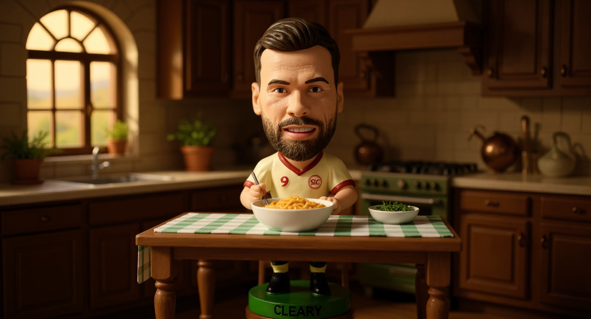
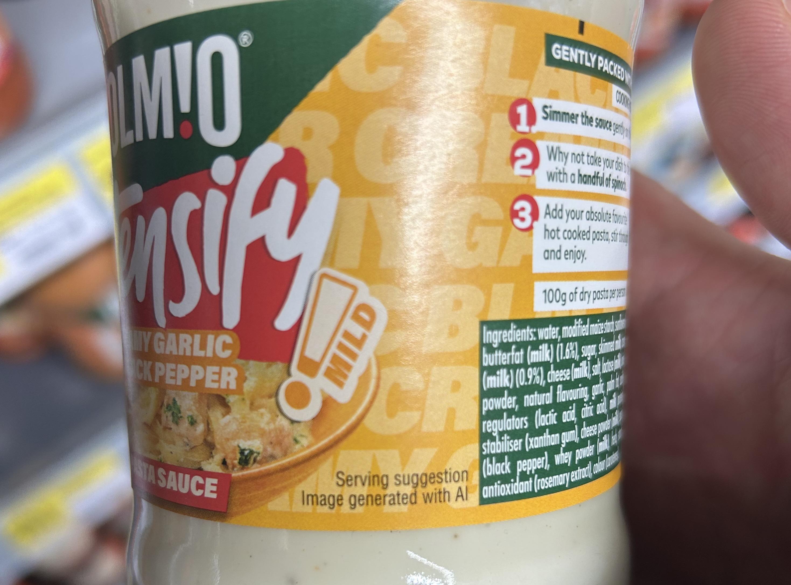
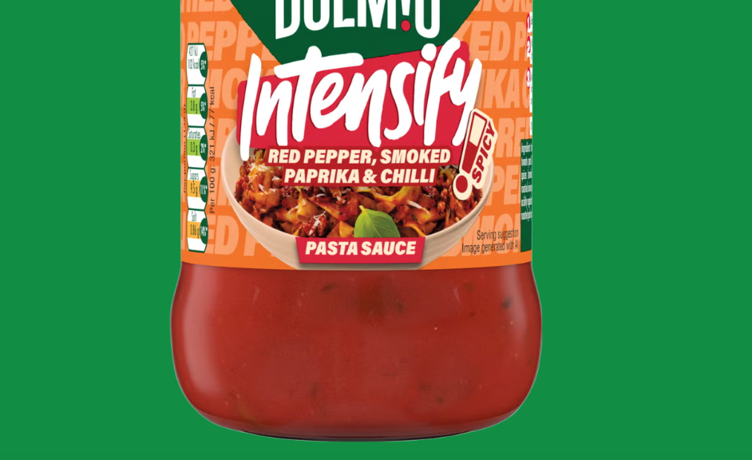
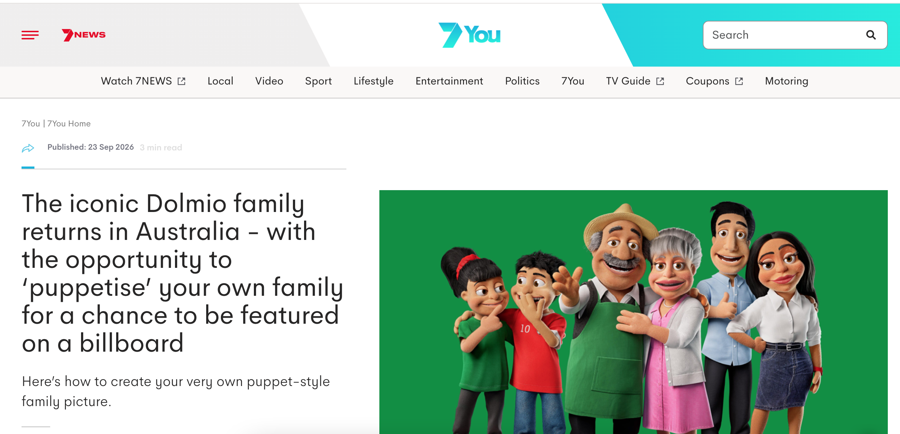
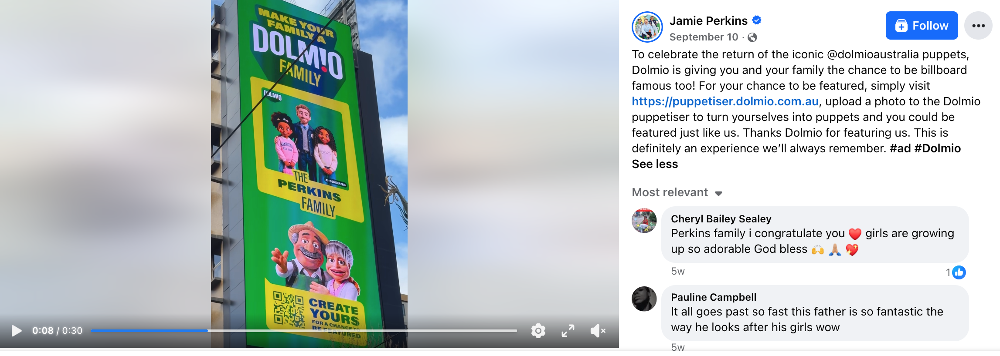

stephenjcleary

I was in the supermarket last week and picked up a jar of Dolmio. I turned the jar around, the way you do when you're pretending to care about the ingredients, and spotted something underneath the food photo.
Serving suggestion. Image generated with AI.
I stood there for a second. I hadn't seen it before and was surprised. A food brand, on the shelf in SuperValu, openly telling me the picture of creamy pasta on the label was made by AI. I took a photo.

When I got home I checked the Dolmio website. Every jar in the Intensify range carries the same label. A deliberate, range-wide decision.

It turns out this isn't voluntary transparency. Since 2 August 2026, Article 50 of the EU AI Act requires brands to clearly label AI-generated images on packaging where the image could mislead about the product's actual appearance. Fines can reach €15 million or 3% of global annual turnover. Even partial AI use, where a single detail has been added or altered, requires disclosure.
My first reaction was to question whether this is morally right. Should a food brand be using AI-generated images to sell you food?
I did what anyone would do. I asked my wife.
She said, "I don't care."
Fair enough. I turned to Claude.
Claude
It's morally fine. But it's commercially interesting that they felt the need to label it.
The food on that jar never looked like what you'd actually pour out anyway. Every pasta sauce photo has been styled, lit, and retouched to within an inch of its life for decades. The "serving suggestion" disclaimer already tells you "this isn't what you're getting." An AI-generated image of a bowl of creamy pasta is no more or less misleading than a photographer spending four hours with tweezers arranging penne under studio lights.
So on the deception question, I don't think it moves the needle. Nobody is buying Dolmio because the photo on the jar convinced them it would look exactly like that.
Where it gets more interesting is the signal it sends. Dolmio (Mars) is a massive FMCG brand. If they're replacing pack photography with AI-generated images, that's a cost-cutting decision dressed up as transparency. The "Image generated with AI" label looks like honesty, but it might also be legal cover. And it raises a question for the creative industry: if the biggest food brands in the world have decided that a real photographer, food stylist, and art director aren't worth the spend for pack shots, what does that mean for the people who used to do that work?
So the morality isn't really about the consumer being misled. It's about whether brands should be transparent about why they made that choice, not just that they made it.
I thought that was a pretty solid answer. And to be honest, I agree with most of it. We've all bitten into a Burger King Whopper and compared it to the one dripping on the grill in their pictures. The gap between food photography and food reality has existed for as long as food advertising has. AI just closes that gap at a lower cost. And now it seems the production method for food imagery will be declared.
But here's the thing that makes me more optimistic about what Dolmio is doing overall.
I'm sure you remember them. The puppet family with the thick Italian accents and the tagline, "When'sa your Dolmio day?" They were one of the most distinctive brand assets in the grocery aisle. Recognisable, warm, and completely ownable. Then they disappeared for a while.
Now they're back, for Dolmio's 40th anniversary. And they're not just running the puppets in ads again. In Australia, they've built an AI tool called the Dolmio Puppetiser that lets real families upload a photo and turn themselves into Dolmio-style puppets. The winning families get featured on a billboard.

7News, 23 Sep 2026

The Perkins Family, featured on a Dolmio billboard via the Puppetiser
That is a strong use of AI. It takes a distinctive brand asset that people already have affection for and activates it in a way that is engaging, participatory, and builds fame. Families are sharing their puppetised versions online. A real family ended up on a billboard. The brand gets user-generated content that reinforces its most recognisable codes.
Compare the two uses of AI side by side. One quietly replaces a food photographer on a jar label. The other brings back a beloved brand character and invites the audience to be part of it. Both are AI. They feel very different.
I think the moral question on the food imagery is smaller than it first appears. We've been served idealised food photos for decades and nobody has felt cheated by a jar of pasta sauce. But the creative question is bigger. If AI is going to touch every part of how a brand shows up, the brands that use it to activate their distinctive assets, rather than just cut costs, will be the ones people actually remember.
When'sa your Dolmio day? Apparently, it's today.